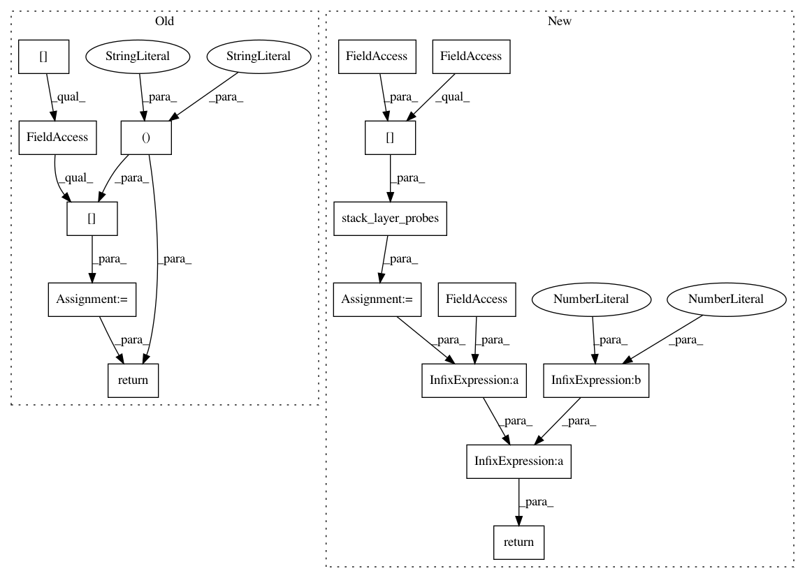

9b254aaf76efaa0a3789a67137c9817684862cf9,snntoolbox/simulation/target_simulators/loihi_target_sim.py,SNN,get_spiketrains,#SNN#,250
Before Change
i = len(self.layers) - 1 if kwargs[str("monitor_index")] == -1 else \
kwargs[str("monitor_index")] + 1
idx = self.probe_idx_map["spikes"]
spiketrains_flat = self.probes[i][idx].data[:, -self._num_timesteps:]
spiketrains_b_l_t = self.reshape_flattened_spiketrains(
spiketrains_flat, shape, False)
return spiketrains_b_l_t
def get_spiketrains_input(self):
shape = list(self.parsed_model.input_shape) + [self._num_timesteps]
idx = self.probe_idx_map["spikes"]
After Change
i = len(self.snn.layers) - 1 if kwargs[str("monitor_index")] == -1 \
else kwargs[str("monitor_index")] + 1
layer = self.snn.layers[i]
probes = self.stack_layer_probes(self.spike_probes[layer.name])
shape = self.spiketrains_n_b_l_t[j][0].shape
spiketrains_b_l_t = self.reshape_flattened_spiketrains(probes, shape)
return spiketrains_b_l_t / layer.vTh / 2 ** 6
def get_spiketrains_input(self):
if self.spike_probes is None:
return
In pattern: SUPERPATTERN
Frequency: 3
Non-data size: 16
Instances
Project Name: NeuromorphicProcessorProject/snn_toolbox
Commit Name: 9b254aaf76efaa0a3789a67137c9817684862cf9
Time: 2019-07-11
Author: bodo.rueckauer@intel.com
File Name: snntoolbox/simulation/target_simulators/loihi_target_sim.py
Class Name: SNN
Method Name: get_spiketrains
Project Name: NeuromorphicProcessorProject/snn_toolbox
Commit Name: 9b254aaf76efaa0a3789a67137c9817684862cf9
Time: 2019-07-11
Author: bodo.rueckauer@intel.com
File Name: snntoolbox/simulation/target_simulators/loihi_target_sim.py
Class Name: SNN
Method Name: get_spiketrains_input
Project Name: NeuromorphicProcessorProject/snn_toolbox
Commit Name: 9b254aaf76efaa0a3789a67137c9817684862cf9
Time: 2019-07-11
Author: bodo.rueckauer@intel.com
File Name: snntoolbox/simulation/target_simulators/loihi_target_sim.py
Class Name: SNN
Method Name: get_spiketrains_output